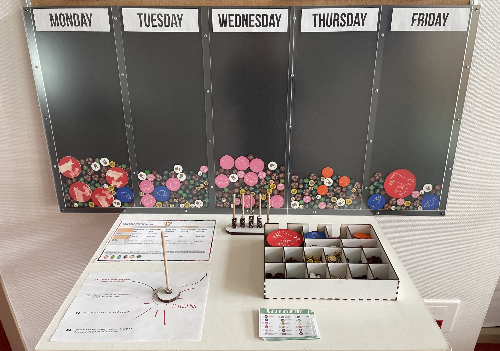
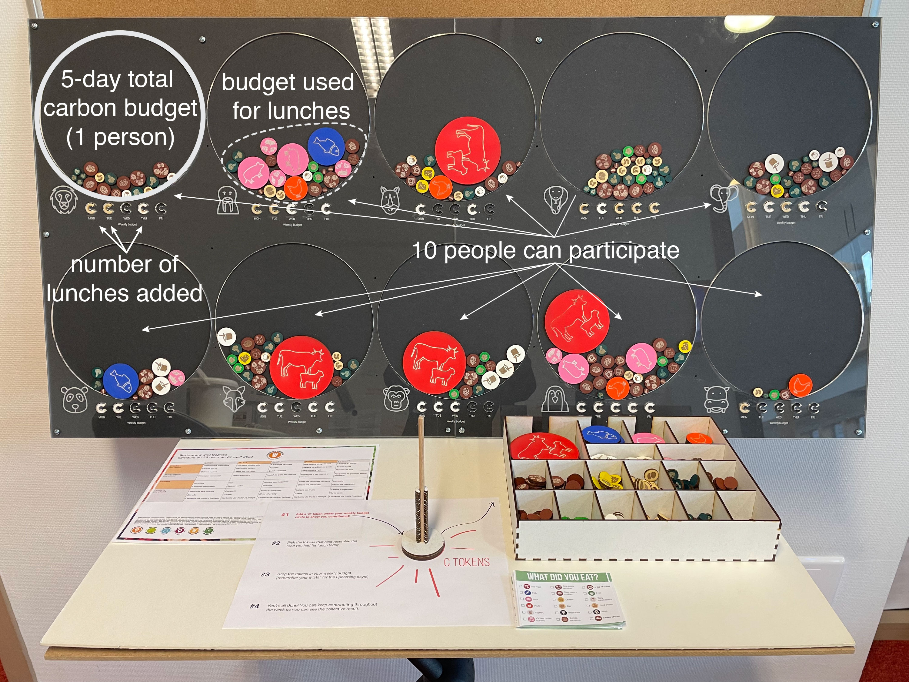
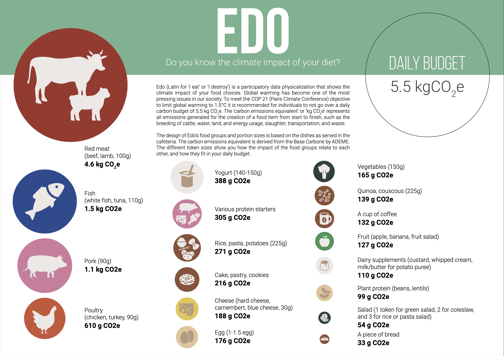

  
Edo is a participatory data physicalization meant to enable a small community to track the carbon impact of their dietary choices. Each type of food item is represented as a token, a disk, whose surface area encodes the carbon impact of a typical portion of that type of food (data source: Agribalyse). After a meal, one can add data by selecting tokens for all the types of food one just consumed. For example, a burger with fries would require a beef token, a bread token, a salad token, and a potato token. All tokens are then added to the board which can have different layouts. The first image shows a grouping by day, where each column shows the impact of food consumed by the people who contributed data that day. The second image shows a grouping by person, where each circle belongs to one person and illustrates the total carbon budget per person for 5 days if one was aiming to remain within a 2t yearly budget.
{kind=link}
{kind=link}
{kind=link}
This project was presented as a pictorial at the ACM TEI 2023 conference. A video of the presentation given by Kim Sauvé is available on Vimeo.
Sources:
- The ACM TEI pictorial: Kim Sauvé, Pierre Dragicevic, and Yvonne Jansen. 2023. Edo: A Participatory Data Physicalization on the Climate Impact of Dietary Choices. In Proceedings of the Seventeenth International Conference on Tangible, Embedded, and Embodied Interaction (TEI ‘23). Association for Computing Machinery, New York, NY, USA, Article 35, 1–13. (https://doi.org/10.1145/3569009.3572807)
- Fabrication instructions and data are available under CC-BY 4.0 on OSF.